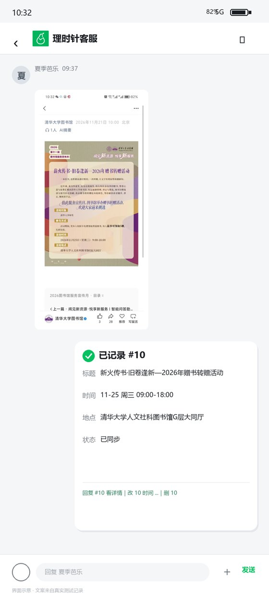
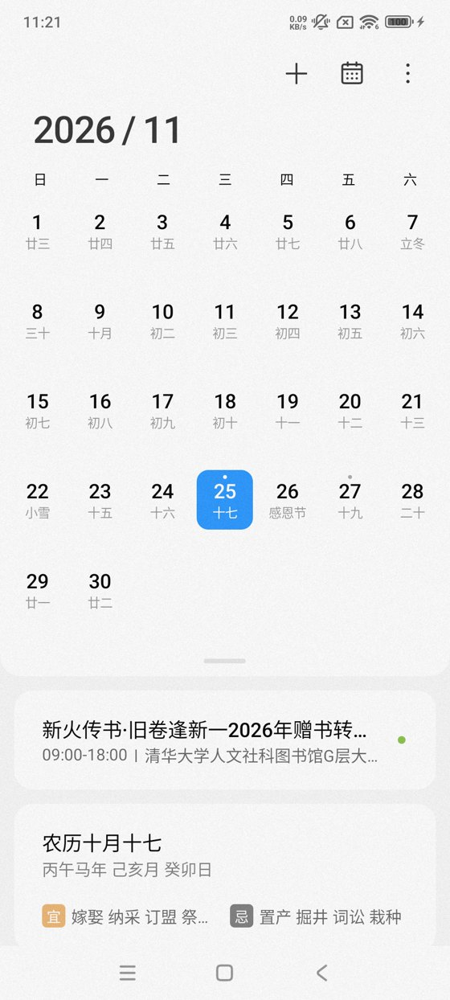
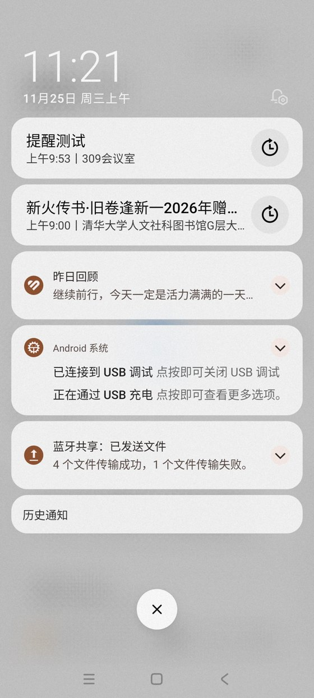

入口层
微信客服 / 测试号、分享面板、截图、拖拽；未来接入更多 App。
WeCom KFShareScreenshot

HOW IT WORKS
不是再做一个信息流，而是把「看到」变成「不会错过」。
微信 / 飞书 / 小红书 / 邮件，截图、转发或拖拽。
中文时间规则 + OCR，抽取标题、时间、地点与截止。
编号、冲突检测，可改可删，确认后才写日历。
CalDAV 写入，DAVx5 拉取，不依赖后台常驻。
系统日历本地通知，到点弹出。
正在理解这条消息
回复 #10 看详情｜改 10 时间 ...｜删 10
写入一次，系统负责之后的每一次提醒。

消息在哪里，日程就从哪里长出来。
REAL DEVICE
微信客服 → 解析 → CalDAV → Android 系统日历 → 到点通知。

UNDER THE HOOD
入口可以变，解析与日历写入的能力不变。
微信客服 / 测试号、分享面板、截图、拖拽；未来接入更多 App。
中文相对时间、区间、截止；RapidOCR 识别海报与截图。
编号、冲突检测、改删确认；SQLite 持久化与幂等同步。
CalDAV/Radicale 写入，DAVx5 拉取，系统负责本地提醒。
WHAT'S NEXT
用户不需要改变习惯，入口可以换。
发消息、转文章、传海报，拿到卡片，写进系统日历。
分享面板、截图、拖拽，跨微信、飞书、小红书与邮件。
内置手机助手：识屏、截图即触发，自动写入日程与提醒。